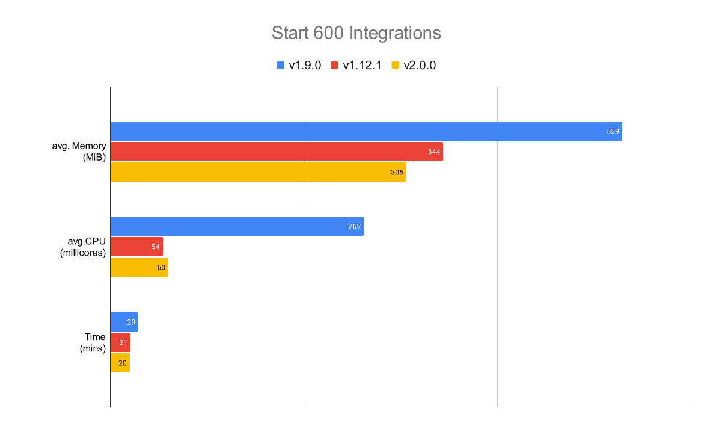
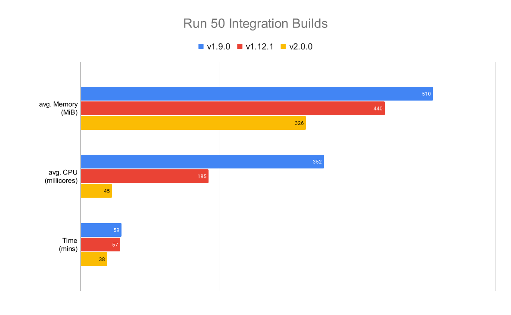

© 2023, RoadTrafficSigns.com
With a great level of excitement, on behalf of Apache Camel community, I’m proud to announce the general availability of Camel K 2.0. It’s been a long ride since the beginning of 2023 when we announced the desire to work on an heavy refactoring in order to introduce new shining features and be able to run the future Camel 4 runtimes.
This is the first important milestone reached, and we thought that the work done so far is already mature to see general availability. We’ll keep working on the roadmap along this year in order to try to complete as much as we can of what we have planned for 2023.
Let’s look at one by one the main new features or updates that Camel K 2.0 is introducing. We plan to work on more blogs and documentation dedicated to each of the new features introduced during next months.
Release details
You can find all the CLIs and detailed changelog information in the Camel K 2.0.0 release page. Download the CLI for your operating system and architecture, kamel install and be ready to use the latest features available.
As usual, we acknowledge the great work done in Apache Camel community. Camel K default runtime is based on the following projects:
- Apache Camel K Runtime 2.16.0
- Apache Camel Quarkus 2.16.0
- Apache Camel 3.20.1
- Apache Camel Kamelets 3.20.1.1
Upgrade from V1
The first concern you may have is about compatibility to Camel K version 1 and how to upgrade: we have worked to make this process as smooth as possible. We introduced some important change in the Kubernetes API and we tried to make this in a backward compatible manner. In particular we have promoted the v1alpha1.Kamelet/KameletBinding API to v1 as we now feel it’s mature enough and we have renamed the v1alpha1.KameletBinding to v1.Pipe.
We don’t expect you to make any change on the old API though. As for Kamelet, the Kubernetes cluster will take care to automatically upgrade this (as it’s just a change in the versioning).
WARNING: make sure not to downgrade to Camel K version 1 once you have upgraded to version 2, because there won’t be any conversion from v1 to v1alpha1 and it may result in a fatal error.
The old v1alpha1.KameletBinding will still be supported in this release in order to give you the time to make the needed change and move all your KameletBindings to v1.Pipe. Try to give priority to this operation because the v1alpha1 is now deprecated and will be removed within the next versions of Camel K.
There is no other important concern about the compatibility with the previous Camel K version.
We suggest to take the opportunity of this major upgrade to detect any usage of deprecated parameters in the Camel K API and do the switch accordingly.
Possibility to run any Camel K Runtime
The first important feature we have introduced is the possibility to run any Camel K Runtime, making Camel K 2.0 backward and forward compatible. With this feature you can use the Camel trait and specify which runtime version you want to use. As soon as a new version is available (ie, runtime version 3 which will run Camel 4), then, you can just update that parameter without the need to upgrade the operator any longer.
By default, Camel K 2.x will use the stable runtime version at the moment of the release (in this case, Camel K runtime 2.16.0).
NOTE: You can use any Camel K Runtime version >= 1.17.0.
Enterprise grade build system
We have redesigned massively the way we conceive our build in order to accommodate the need run any Camel K Runtime. We are in general aware that we need to strengthen the way we build the applications, making sure each customer can introduce their tooling and have enough possibility to choose how to perform such a build in an “enterprise-grade”. Although we’re still working in progress (more enhancements to come in next milestone), we already have achieved most of the points we wanted to cover.
Free Camel K from Runtime
The build process is now partially decoupled from the runtime process. We have identified the design and we applied it in Camel K version 2. The most important news was discussed in the chapter above, the enablement of multiple Camel K runtime.
In order to enable this feature, you will notice that the CamelCatalog Custom Resource is now a dynamic resource which is reconciled by the operator. It is the one in charge to dynamically create any new runtime catalog required. This work was a big design change and we’re confident it will help use reaching the longer term goal which is to onboard any Camel runtime (main, springboot, quarkus).
Have a look at the official documentation and learn more about the new Camel K Runtime builder design.
Transform the build into a pipeline
We have realized that the concept of an application build is not something “static”. Each user/company has a different approach when building and testing an application. That’s the reason why we have reworked the entire concept of the build and replace with something more customizable, a pipeline.
The first immediate result of this change is that you have available a simple Camel K Pipeline technology. This one is thought for those developers and companies which do not require all the major features of a complete pipeline technology. You may want to use this in order to provide some post-build process (ie, running a CVE scanning tool) or in general, execute any tool required by your company deployment process.
Camel K Tekton tasks
We also know that many companies already adopts some richer CICD technology. For this reason we have introduced the Camel K Tekton task which we’re willing to support in order to simplify the onboarding of Camel K in Tekton pipeline.
We have chosen to support Tekton because it’s one of the most mature and widespread used CICD technology. However, if you’re using any other pipeline technology it should not be difficult to transform the action we are supporting in Tekton task with the one required by your pipeline technology.
More meaningful error messages
We know troubleshooting a failing application can be a bit annoying. For this reason we’ve added more error conditions and traces that will make this activity easier. Check it out Integration, IntegrationKit and Build custom resources conditions in order to understand why some application has failed.
In particular in the Build (which is the main reason why an application fails) custom resource you will find conditions like the following one which can give you an immediate pulse of what’s going on:
conditions:
- lastTransitionTime: "2023-05-19T09:56:02Z"
lastUpdateTime: "2023-05-19T09:56:02Z"
message: |
...
{"level":"info","ts":1684490148.080175,"logger":"camel-k.builder","msg":"base image: eclipse-temurin:11"}
{"level":"info","ts":1684490148.0801787,"logger":"camel-k.builder","msg":"resolved base image: eclipse-temurin:11"}
reason: Completed (0)
status: "True"
type: Container builder succeeded
Quarkus Native build as a Pod
A Quarkus native build is an important feature that helps you save resources and give your Java application all the characteristics of a first class Cloud Native citizen. However, AOT compilation is something that requires resources and time. For this reason, from now on, when you run a Quarkus Native build, this will be performed with the Pod build strategy, which will basically spin off an external Pod to take care of such an heavy operation.
This is a good news, because it will free the operator from the burden of such an heavy operation. Moreover we introduced some sensible resource configuration which should be enough for the builder Pod to complete its work without affecting the stability of the operator.
However, if those are not enough or you still want to customize the builder Pod resources, we have made available a set of builder parameters (mainly cpu and memory resources).
Run build unprivileged
This is quite an hidden work we’ve done and it really gave us a lot of trouble in order to let Spectrum and S2I builds to run in an unprivileged mode. However, we’ve accomplished it and we feel a little safer against any possible attack from privileged escalation.
NOTE: we haven’t (yet) deprecated Kaniko and Buildah strategy and these deployment methods require to run with root privileges. Make sure to understand the possible risks involved.
Build order strategy
Another interesting feature that is now available to you is the possibility to define a build order strategy that controls in which order scheduled integration builds get executed.
In Camel K v1 a series of parallel submitted builds got executed strictly sequential (only one single build at a time) and there was no guarantee on the order of build execution.
Now you can specify the order of builds using the Builder trait order strategy parameter.
Supported build order strategies are:
sequential: equivalent to the Camel K 1 behavior running only one single build at a timefifo: First in first out strategy runs builds as they have been created and allows builds to run in parallel to each other as long asmaxRunningBuildslimit has not been reached.dependencies: Sophisticated order strategy smartly creating a queue for those builds which may depend on each other in order to effectively run builds leveraging the incremental build feature. Allows independent builds to run in parallel to each other as long asmaxRunningBuildslimit has not been reached. You can now choose from these build order strategies to get the best out of Camel K. Our operator is smarter than any AI out there!!
More info on Kube native CLI
It’s no secret that in the long term we’re willing to move most of the logic of kamel CLI in Camel JBang or any other UI tool. The possibility to include more information directly in kubectl and any other K8S CLI (ie, oc) will help you getting most of the required information in one shot:
$ kubectl get camelcatalog
NAME RUNTIME PROVIDER RUNTIME VERSION RUNTIME CAMEL VERSION PHASE
camel-catalog-2.16.0 quarkus 2.16.0 3.20.1 Ready
$ kubectl get ip
NAME PHASE BUILD STRATEGY PUBLISH STRATEGY REGISTRY ADDRESS DEFAULT RUNTIME
camel-k Ready routine Spectrum 10.110.251.124 2.16.0
...
Camel K Runtime versioning
The design work we did in Camel K in order to decouple from the runtime made us working on a deep cleaning of Camel K Runtime as well. This dependency is even lighter that before and right now it is mainly dependant from the Camel Quarkus project. You can notice that we aligned the versioning of this dependency to the versioning used in Camel Quarkus. It will be easier to identify which Camel Quarkus runtime we refer now.
From now on we expect to release this dependency when Camel Quarkus will be released.
Golang API upgrade to V2 and dependencies upgrade
This change won’t affect directly the users of Camel K but it’s important to mention for those tools or application that are using Camel K Golang API. We have upgraded to V2 accordingly, so, anybody willing to use this API will have to do the update accordingly.
We have also performed a deep review to verify those old unsupported dependencies which may lead to a possible headache in case of some CVE. We have removed all the unsupported dependencies and we feel a bit more safer against possible vulnerabilities in the dependencies we use.
Remove deprecated CLI commands
As we embarked in a major upgrade, we took the opportunity to clean all the deprecated CLI commands and configuration we had marked in Camel K version 1.
kamel install --kaniko-build-cachekamel localkamel initkamel run --config|--resource file:
In version 2 they won’t be any longer available and the operator may fail if those configurations are provided. Above all, the last one will require you to provide a resource file as either a Configmap or Secret if you want to use the related configuration (we don’t support any longer the auto-generated Confimaps from file).
Multiple data types and schemas in Kamelets
Kamelets are now able to expose supported input/output data types as part of the Kamelet data type specification in order to increase the interoperability with other components. When referencing a Kamelet as a source or sink in a Pipe users may now choose an appropriate input/output data type that fits best for their individual use case.
This feature leverages the data types transformer concept in Apache Camel 4 and reveals its full power once the new major version of Camel is available (we are all eagerly awaiting it).
Default Micrometer for integration monitoring
About observability we made some work to use Micrometer as a default. Some changes are expected in the default metrics as it replaced the dependencies used from one technology (Microprofile) to another (Micrometer).
You can have a look at the Prometheus trait configuration to learn more.
Multi architecture support
This feature should not be considered as generally available but more a kind of “tech preview”. In Camel K 2.0 we provide an ARM64 architecture based container image for the operator but it is not tested due to the difficulty to find the required infrastructure and have the suite of test running. It’s a best effort feature that we hope we can make generally available in the future versions.
For more information you can have a look at the Multi architecture official documentation page.
Code coverage report
If you’re a Camel K contributor you have noticed that we introduced a nice action which is taking care to calculate the code coverage of the new code developed. The actions reports the coverage difference, so we know how we increase (or decrease) indirectly the quality of the code. This is not really (yet) a gateway, we want to create awareness among Camel K developers about the level of quality we introduce with each change. Little by little we expect to increase the quality of the code we produce and have less bugs affecting our code.
Optimize operator performance and resource allocation
The team has made some effort to reduce the amount of resources (memory and CPU) consumed by the Camel K operator. The results of this can be seen when creating many Integrations on a cluster and when the operator runs multiple integration builds.
We have run some test scenarios and compared the results of different Camel K versions.
Test scenario: Running 600 Camel K integrations

| Camel K | avg. Memory | avg. CPU | Time |
|---|---|---|---|
| 1.9.0 | 529 MiB | 262 millicores | 29 mins |
| 1.12.1 | 344 MiB | 54 millicores | 21 mins |
| 2.0.0 | 306 MiB | 60 millicores | 20 mins |
Test scenario: Running 50 integrations builds in parallel

| Camel K | avg. Memory | avg. CPU | Time |
|---|---|---|---|
| 1.9.0 | 510 MiB | 352 millicores | 59 mins |
| 1.12.1 | 440 MiB | 185 millicores | 57 mins |
| 2.0.0 | 326 MiB | 45 millicores | 38 mins |
The Camel K 2.0 results are pleasant especially when running multiple builds at the same time. The team is keen to keep improving the operator performance in future releases.
Documentation
The last important point we’ve introduced is about the additional documentation we’ve provided. Maintaining the documentation up to date is a very well known hard task. But we know this is important for the final users to get the best from the project.
In general we have worked to update the documentation with the various changes we have introduced. Additionally we have added the documentation which explain the major features of the new release.
Beside that we have also worked on a series of documentation or blog post with the goal to help you setting up an “enterprise ready” configuration:
- Camel K operator fine tuning
- Camel K Maven best practices
- Camel K GitOps unopinionated approach
- Camel K tracing
We’ve more planned for the next months so, stay tuned.
What’s left for Camel K > 2.0
The main details of the work we did can be directly found among the Github issues and pull requests in the project. You can have a look at the plan we did for the Camel K 2.0 milestone 1.
Some of the original work planned and not completed may be delivered in the next milestone (likely Camel K version 2.1), but we think we can take a little break before starting the next plan.
Thanks
I’d like to spend some words and thanks all the contributors who made this release possible. All the people that have made some development. All the people that have tested all the work done. All the people that have taken the time to write and read documentation. All the people which have provided feedback, ideas and criticisms around the developments we’ve been doing in the last months. Apache Camel K (and more in general, Camel) is made by all of you: thanks!